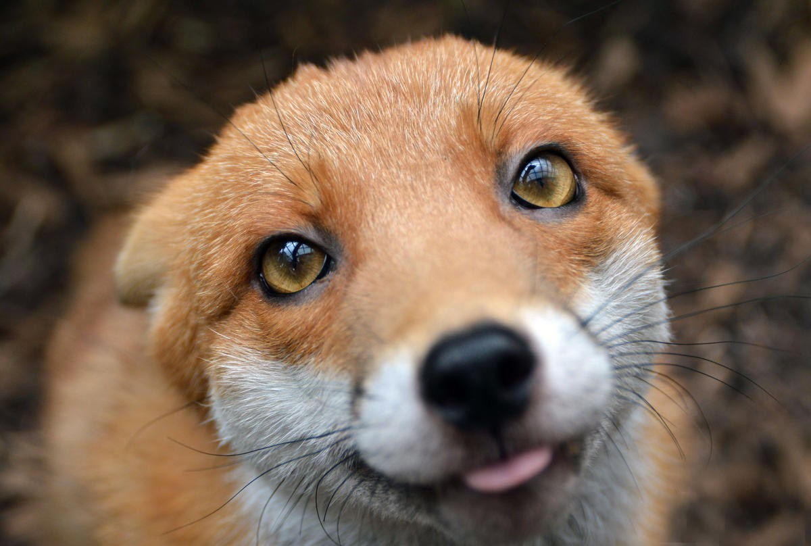

Вызов ветеринара с Х до Х по Москве - Х руб.
Кастрация от Х р., стерилизация - от Х р.
Родовспоможение - от Х р/ч.
Ультразвуковая чистка зубов - от Х р.
Вакцинация - от Х р.
Хирургия - от Х р.
Эвтаназия - от Х р.
Мы лечим любых домашних животных, включая экзотических и редких.
В числе наших пациентов животные разных пород и видов (диких и домашних): собаки, кошки, птицы, лошади, кролики, хорьки, обезьяны, свинки, грызуны, рептилии, змеи и т.д.
|  | |||
 |
Режим работы стационаров
Стационары нашей круглосуточной ветеринарной клиники находятся в разных районах Москвы и Подмосковья, и работают 24 часа в сутки без выходных и перерывов.
В условиях стационара мы предлагаем любую помощь вашим питомцам.
ЗоонМед - это команда опытных ветеринаров: хирургов, травматологов, терапевтов, кардиологов, акушеров, дерматологов, офтальмологов...
Наша круглосуточная ветеринарная клиника оснащена современным оборудованием и применяет эффективные методы лечения, а это лучший залог здоровья ваших любимцев.
Режим работы службы вызова на дом
Наши терапевтические бригады дежурят в столице круглые сутки.
Мы выезжаем на вызов по Москве и Московской области в любое время дня и ночи 24 часа 7 дней в неделю.
Вызов на дом в пределах МКАД (в течение Х ч.) с Х до Х - Х р.
Экстренный вызов / Выезд в течение одного часа - Х р.
Врачи круглосуточной ветеринарной клиники ЗоонМед имеют полный комплекс портативного оборудования для диагностики и лечения на дому.
В нашем клиническом стационаре есть все специалисты, которые предложат вам:
Услуги
службы вызова
на дом
Служба вызова ветеринара на дом предоставляет:
Популярные услуги круглосуточной
ветеринарной клиники ЗоонМед
Вызов ветеринара с Х до Х по Москве - Х руб.
Кастрация от Х р., стерилизация - от Х р.
Родовспоможение - от Х р/ч.
Ультразвуковая чистка зубов - от Х р.
Вакцинация - от Х р.
Хирургия - от Х р.
Эвтаназия - от Х р.